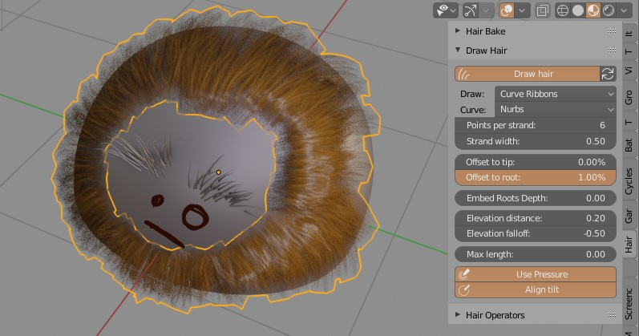
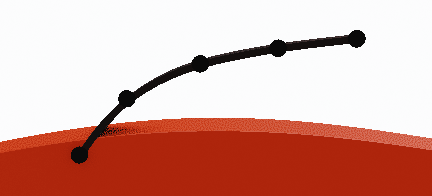
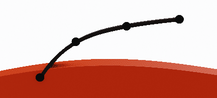
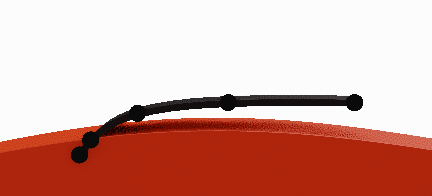
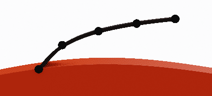

Drawing Hair¶

With Hair Tool you can draw hair (curve ribbons or particle hair) directly on selected mesh surface. It useful when you want finish your hair model, and place some hair cards by hand - to break the symmetry and add some imperfections.
If you have tablet, you can use pen pressure to influence curve radius. You can increase the Elevation distance parameter to lift up strands more out of mesh surface.
Most of the settings are the same for both: drawing curve ribbons and particle hairs.
Panel is located in right UI Sidebar: "Hair Tool" tab -> 'Draw Hair'. Enable hair drawing with 'Draw hair' button. Now when you hold D-Key and draw in 3D viewport with LBM, new strands will be painted (with orange preview).
Drawing curve ribbons:¶
Note: If you have curve object selected, new strokes will be appended to this curve; if mesh is selected new curve hair will be created.
Parameters:¶
- Strand width - curve ribbons width (only curve ribbons)
 Offset to tip - Offset spline points more toward tip
Offset to root - Offset spline points more toward root
 Points per strand - How many points generate for each spline
- Max length - Maximum hair length (0 - disabled). Strand length will be clipped to this value.
 Elevation distance - Elevation strands above surface by this distance
 Elevation falloff - Elevation strength over strand length
Embed Roots Depth - Embed strands roots into mesh surface (only curve ribbons)
- Use Pressure - Use pen pressure to change strand width
- Align tilt - Align ribbons tilt to surface
Drawing particle hair:¶
Dawing particle hair is basically the same as drawing curve ribbons, but the resulting strokes will be converted to particle hair.
If object that you are painting has no particle systems, new one will be created.
If object that you are painting has particle systems, new strands will be appended to active hair particle system.